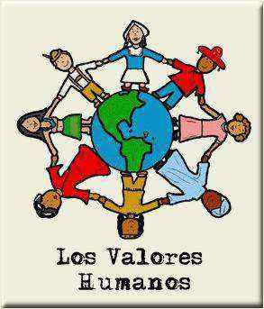

Crear un entorno de aprendizaje seguro
El Maitén sostiene un modelo educativo propio basado en nuestros años de experiencia y constante búsqueda de innovación en materia educativa, pensado desde el futuro y respetando siempre la identidad y los valores.

Placeholder
Fomentar los valores
Trabajamos como eje central a:
- El respeto
- La gratitud
- La generosidad
- La honestidad
- El compromiso, tanto de los estudiantes como de sus familias
Generar crecimiento personal
Buscamos otorgar la mayor libertad y autonomía a cada uno de nuestros
estudiantes.
Proporcionamos
herramientas para que los estudiantes sean capaces de expresarse con claridad y de compartir
sus
ideas, potenciando su capacidad de ser pensadores creativos, innovadores y emprendedores,
seres
curiosos, de mente abierta y con la habilidad de reunir y analizar la información para tomar
decisiones.